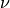
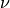

scifysim.sources module¶
- class scifysim.sources._blackbody(modules='numexpr')[source]¶
Bases:
object- __dict__ = mappingproxy({'__module__': 'scifysim.sources', '__init__': <function _blackbody.__init__>, 'Stefan_Boltzmann': <function _blackbody.Stefan_Boltzmann>, '__dict__': <attribute '__dict__' of '_blackbody' objects>, '__weakref__': <attribute '__weakref__' of '_blackbody' objects>, '__doc__': None, '__annotations__': {}})¶
- __init__(modules='numexpr')[source]¶
Builds the spectral radiance as a function of
 and ,
and ,  , and
, and 
Call
self.get_Bxxxto get the functionB = f(lambda , T)GENIEsim
Attribute
Results in
0
B_lamb_Jy
Jy / sr
1
B_lamb_W
W / m^2 / m / sr
2
B_lamb_ph
ph / s / m^2 / m / sr
3
B_nu_ph
ph / s / m^2 / Hz / sr
- __module__ = 'scifysim.sources'¶
- __weakref__¶
list of weak references to the object (if defined)
- scifysim.sources.chain(A, B)[source]¶
This function helps define which occulting / emitting source is in front ro behind which.
Parameters:
A : An upstream transmission_emission object
B : A downstream transmission_emission object.
- scifysim.sources.distant_blackbody(lambda_range, T, dist, radius)[source]¶
Returns the flux density for a distant blackbody lambda_range : Wavelenght [m] T : temperature [K] dist : Distance [pc] radius : Star radius [R_sun]
Returns flux density [ph/s/m^2] arriving to earth (no atmosphere).
- class scifysim.sources.group[source]¶
Bases:
objectJust a simple object to structure some data.
- __dict__ = mappingproxy({'__module__': 'scifysim.sources', '__doc__': '\n Just a simple object to structure some data.\n ', '__init__': <function group.__init__>, '__dict__': <attribute '__dict__' of 'group' objects>, '__weakref__': <attribute '__weakref__' of 'group' objects>, '__annotations__': {}})¶
- __module__ = 'scifysim.sources'¶
- __weakref__¶
list of weak references to the object (if defined)
- class scifysim.sources.resolved_source(lambda_range, distance, radius, T, angular_res=10, radial_res=15, offset=(0.0, 0.0), build_map=True, resolved=True)[source]¶
Bases:
object- __dict__ = mappingproxy({'__module__': 'scifysim.sources', '__init__': <function resolved_source.__init__>, 'build_point': <function resolved_source.build_point>, 'build_grid': <function resolved_source.build_grid>, 'get_spectrum_map': <function resolved_source.get_spectrum_map>, 'build_spectrum_map': <function resolved_source.build_spectrum_map>, 'distant_blackbody': <function resolved_source.distant_blackbody>, '__dict__': <attribute '__dict__' of 'resolved_source' objects>, '__weakref__': <attribute '__weakref__' of 'resolved_source' objects>, '__doc__': None, '__annotations__': {}})¶
- __init__(lambda_range, distance, radius, T, angular_res=10, radial_res=15, offset=(0.0, 0.0), build_map=True, resolved=True)[source]¶
Parameters:
distance : Distance of the source [pc]
radius : The radius of the source [R_sun]
T : Blackbody temperature [K]
angular_res : Number of bins in position angle
radial_res : Number of bins in radius
offset : Offset of the source radial ([mas], [deg])
build_map : Whether to precompute a mapped spectrum
resolved : If false, computes a single point-source
After building the map,
self.ss(wl, pos_x, pos_y) contains the map of flux density corresponding to positionsself.xx,self.yy
- __module__ = 'scifysim.sources'¶
- __weakref__¶
list of weak references to the object (if defined)
- build_grid(angular_res, radial_res)[source]¶
Routine used to construct resolved source:
Creates self.xx, self.yy, self.ds, self.theta, self.r
- build_point()[source]¶
Routine used to construct unresolved source:
Creates
self.xx,self.yy,self.ds,self.theta[rad],self.r[rad] Shapes ofxx,yyare preserved, but they will contain a single element corresponding to the unresolved point source.
- build_spectrum_map()[source]¶
The map is saved in a flat shape xx_f and yy_f are created to be flat versions of the coordinates. ss is a total flux (ph/s/m^2) at the entrance of earth atmosphere.
- class scifysim.sources.source(xx, yy, ss)[source]¶
Bases:
objectDEPRECATED: use resolved_source for all source modelisation purposes
- __dict__ = mappingproxy({'__module__': 'scifysim.sources', '__doc__': '\n DEPRECATED: use resolved_source for all source modelisation purposes\n ', '__init__': <function source.__init__>, '__add__': <function source.__add__>, 'copy': <function source.copy>, 'sky_bg': <classmethod object>, '__dict__': <attribute '__dict__' of 'source' objects>, '__weakref__': <attribute '__weakref__' of 'source' objects>, '__annotations__': {}})¶
- __module__ = 'scifysim.sources'¶
- __weakref__¶
list of weak references to the object (if defined)
- class scifysim.sources.src_extended(resol, extent, fiber_vigneting=False)[source]¶
Bases:
object- __dict__ = mappingproxy({'__module__': 'scifysim.sources', '__init__': <function src_extended.__init__>, 'uniform_disk': <function src_extended.uniform_disk>, '__dict__': <attribute '__dict__' of 'src_extended' objects>, '__weakref__': <attribute '__weakref__' of 'src_extended' objects>, '__doc__': None, '__annotations__': {}})¶
- __init__(resol, extent, fiber_vigneting=False)[source]¶
resol : Number of elements across extent : The extent of the source fiber_vigneting : whether to include fiber vigneting in the luminosity distribution
Fiber vigneting should not be included when off-axis injection is simulated
- __module__ = 'scifysim.sources'¶
- __weakref__¶
list of weak references to the object (if defined)
- class scifysim.sources.star_planet_target(config, director)[source]¶
Bases:
object- __dict__ = mappingproxy({'__module__': 'scifysim.sources', '__init__': <function star_planet_target.__init__>, 'physical_separation': <property object>, '__dict__': <attribute '__dict__' of 'star_planet_target' objects>, '__weakref__': <attribute '__weakref__' of 'star_planet_target' objects>, '__doc__': None, '__annotations__': {}})¶
- __module__ = 'scifysim.sources'¶
- __weakref__¶
list of weak references to the object (if defined)
- property physical_separation¶
The physical separation between the planet and star (AU)
- class scifysim.sources.transmission_emission(trans_file='data/MK_trans_sfs.txt', T=285, airmass=False, observatory=None, name='noname')[source]¶
Bases:
object- __dict__ = mappingproxy({'__module__': 'scifysim.sources', '__init__': <function transmission_emission.__init__>, 'get_trans_emit': <function transmission_emission.get_trans_emit>, 'get_mean_trans_emit': <function transmission_emission.get_mean_trans_emit>, 'get_own_brightness': <function transmission_emission.get_own_brightness>, 'get_upstream_brightness': <function transmission_emission.get_upstream_brightness>, 'get_total_brightness': <function transmission_emission.get_total_brightness>, 'get_own_transmission': <function transmission_emission.get_own_transmission>, 'get_downstream_transmission': <function transmission_emission.get_downstream_transmission>, '__dict__': <attribute '__dict__' of 'transmission_emission' objects>, '__weakref__': <attribute '__weakref__' of 'transmission_emission' objects>, '__doc__': None, '__annotations__': {}})¶
- __init__(trans_file='data/MK_trans_sfs.txt', T=285, airmass=False, observatory=None, name='noname')[source]¶
Reproduces a basic behaviour in emission-transmission of a medium in the optical path. Inspired by the geniesim
Parameters:
trans_file : The path to a transmission data file
T : Temperature of the medium used for emission
airmass : When True, scales the effect with the airmass provided by the observatory object
observatory : The observatory object used to provided the airmass.
Warning
Unlike for astrophysical sources, when a transmission_emission object contains an ss attribute, it already takes into account the transmission through the insturment.
- __module__ = 'scifysim.sources'¶
- __weakref__¶
list of weak references to the object (if defined)
- get_downstream_transmission(wl, inclusive=True)[source]¶
Used when chaining different media. Returns the total of the transmission function of the chain downstream of the object.
Parameters:
wl : The wavelengths to be computed
inclusive: Whether to includ the transmission of the object itself
- get_mean_trans_emit(wl, bandwidth=None, bright=False, n_sub=10)[source]¶
Similar begaviour as get_trans_emit() but averages the effect over each spectral channel.
Parameters:
wl : The center of each wavelength channel. If bandwidth is not provided (prefered situation) the width of each channel will be set as the spacing between them (through np.gradient())
bandwidth : (deprecated) array of floats providing the width of each spectral channe.
n_sub : The number of sub-channel to compute for the calculation. A minimum of 10 is recommended.
- get_own_brightness(wl)[source]¶
Used when chaining different media. Returns the flux density per solid angle of the object in each wl channel. [ph/m2/sr]
- get_own_transmission(wl)[source]¶
Used when chaining different media. Returns the transmission function of the object.
- get_total_brightness(wl)[source]¶
Used when chaining different media. Returns the total filtered flux density per solid angle of the object in each wl channel. [ph/s/m2/sr] downstream of the object (inclusively)